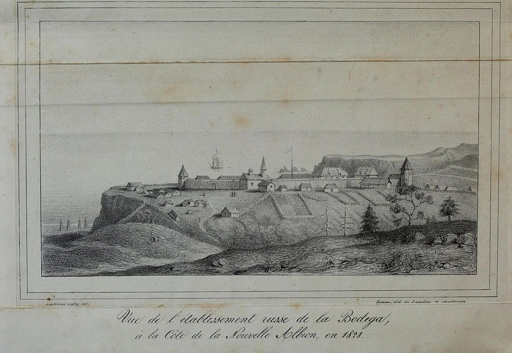

Settled by successive waves of arrivals during the last 10,000 years, California was one of the most culturally and linguistically diverse areas in pre-Columbian North America. Various estimates of the native population range from 100,000 to 300,000. The Indigenous peoples of California included more than 70 distinct groups of Native Americans, ranging from large, settled populations living on the coast to groups in the interior. California groups also were diverse in their political organization with bands, tribes, villages, and on the resource-rich coasts, large chiefdoms, such as the Chumash, Pomo and Salinan. Trade, intermarriage and military alliances fostered many social and economic relationships among the diverse groups.
Mission San Diego de Alcalá drawn as it was in 1848. Established in 1769, it was the first of the California Missions.
The first European effort to explore the coast as far north as the Russian River was a Spanish sailing expedition, led by Portuguese captain Juan Rodríguez Cabrillo, in 1542. Some 37 years later English explorer Francis Drake also explored and claimed an undefined portion of the California coast in 1579. Spanish traders made unintended visits with the Manila galleons on their return trips from the Philippines beginning in 1565. The first Asians to set foot on what would be the United States occurred in 1587, when Filipino sailors arrived in Spanish ships at Morro Bay. Sebastián Vizcaíno explored and mapped the coast of California in 1602 for New Spain.
Despite the on-the-ground explorations of California in the 16th century, Rodríguez's idea of California as an island persisted. That depiction appeared on many European maps well into the 18th century.
After the Portolà expedition of 1769–70, Spanish missionaries began setting up 21 California Missions on or near the coast of Alta (Upper) California, beginning in San Diego. During the same period, Spanish military forces built several forts (presidios) and three small towns (pueblos). Two of the pueblos grew into the cities of Los Angeles and San Jose. The Spanish colonization brought the genocide of the indigenous Californian peoples.
The Russian Empire established their largest settlement in California at Fort Ross in 1812
Map showing Alta California in 1838 when it was a sparsely populated Mexican province.
Merchant ships fill San Francisco harbor in 1850 or 1851
Imperial Russia explored the California coast and established a trading post at Fort Ross. Its early 19th-century coastal settlements north of San Francisco Bay constituted the southernmost Russian colony in North America and were spread over an area stretching from Point Arena to Tomales Bay.
In 1821, the Mexican War of Independence gave Mexico (including California) independence from Spain; for the next 25 years, Alta California remained a remote northern province of the nation of Mexico.
Cattle ranches, or ranchos, emerged as the dominant institutions of Mexican California. After Mexican independence from Spain, the chain of missions became the property of the Mexican government and were secularized by 1834.[35] The ranchos developed under ownership by Californios (Spanish-speaking Californians) who had received land grants, and traded cowhides and tallow with Boston merchants.
From the 1820s, trappers and settlers from the United States and the future Canada arrived in Northern California. These new arrivals used the Siskiyou Trail, California Trail, Oregon Trail and Old Spanish Trail to cross the rugged mountains and harsh deserts in and surrounding California.
Between 1831 and 1836, California experienced a series of revolts against Mexico; this culminated in the 1836 California revolt led by Juan Bautista Alvarado, which ended after Mexico appointed him governor of the department. The revolt, which had momentarily declared California an independent state, was successful with the assistance of American and British residents of California,[38] including Isaac Graham;[39] after 1840, 100 of those residents who did not have passports were arrested, leading to the Graham affair in 1840.
One of the largest ranchers in California was John Marsh. After failing to obtain justice against squatters on his land from the Mexican courts, he determined that California should become part of the United States. Marsh conducted a letter-writing campaign espousing the California climate, soil and other reasons to settle there, as well as the best route to follow, which became known as "Marsh's route." His letters were read, reread, passed around, and printed in newspapers throughout the country, and started the first wagon trains rolling to California.He invited immigrants to stay on his ranch until they could get settled, and assisted in their obtaining passports.
After ushering in the period of organized emigration to California, Marsh helped end the rule of the last Mexican governor of California, thereby paving the way to California's ultimate acquisition by the United States.
In 1846, settlers rebelled against Mexican rule during the Bear Flag Revolt. Afterwards, rebels raised the Bear Flag (featuring a bear, a star, a red stripe and the words "California Republic") at Sonoma. The Republic's only president was William B. Ide,who played a pivotal role during the Bear Flag Revolt.
The California Republic was short lived;[44] the same year marked the outbreak of the Mexican–American War (1846–48).[45] When Commodore John D. Sloat of the United States Navy sailed into Monterey Bay and began the military occupation of California by the United States, Northern California capitulated in less than a month to the United States forces. After a series of defensive battles in Southern California, the Treaty of Cahuenga was signed by the Californios on January 13, 1847, securing American control in California.
Following the Treaty of Guadalupe Hidalgo that ended the war, the western territory of Alta California, became the United States state of California, and Arizona, Nevada, Colorado and Utah became United States Territories. The lightly populated lower region of California, the Baja Peninsula, remained in the possession of Mexico.
In 1846, the non-native population of California was estimated to be no more than 8,000, plus about 100,000 Native Americans down from about 300,000 before Hispanic settlement in 1769. After gold was discovered in 1848, the population burgeoned with United States citizens, Europeans, Chinese and other immigrants during the great California Gold Rush. By 1854 over 300,000 settlers had come.Between 1847 and 1870, the population of San Francisco increased from 500 to 150,000. On September 9, 1850, as part of the Compromise of 1850, California was admitted to the United States undivided as a free state, denying the expansion of slavery to the Pacific Coast.
California's native population precipitously declined, above all, from Eurasian diseases to which they had no natural immunity. As in other states, the native inhabitants were forcibly removed from their lands by incoming miners, ranchers, and farmers. And although California entered the union as a free state, the "loitering or orphaned Indians" were de facto enslaved by Mexican and Anglo-American masters under the 1853 Act for the Government and Protection of Indians. There were massacres in which hundreds of indigenous people were killed. Between 1850 and 1860, California paid around 1.5 million dollars (some 250,000 of which was reimbursed by the federal government)to hire militias whose purpose was to protect settlers from the indigenous populations. In later decades, the native population was placed in reservations and rancherias, which were often small and isolated and without enough natural resources or funding from the government to sustain the populations living on them. As a result, the rise of California was a calamity for the native inhabitants. Several scholars and Native American activists, including Benjamin Madley and Ed Castillo, have described the actions of the California government as a genocide.
The seat of government for California under Spanish and later Mexican rule was located at Monterey from 1777 until 1845. Pio Pico, last Mexican governor of Alta California, moved the capital to Los Angeles in 1845. The United States consulate was also located in Monterey, under consul Thomas O. Larkin.
In 1849, the Constitutional Convention was first held in Monterey. Among the tasks was a decision on a location for the new state capital. The first legislative sessions were held in San Jose (1850–1851). Subsequent locations included Vallejo (1852–1853), and nearby Benicia (1853–1854); these locations eventually proved to be inadequate as well. The capital has been located in Sacramento since 1854 with only a short break in 1862 when legislative sessions were held in San Francisco due to flooding in Sacramento.
Initially, travel between California and the rest of the continental United States was time consuming and dangerous. A more direct connection came in 1869 with the completion of the First Transcontinental Railroad through Donner Pass in the Sierra Nevada mountains. Once completed, hundreds of thousands of United States citizens came west, where new Californians were discovering that land in the state, if irrigated during the dry summer months, was extremely well suited to fruit cultivation and agriculture in general. Vast expanses of wheat, other cereal crops, vegetable crops, cotton, and nut and fruit trees were grown (including oranges in Southern California), and the foundation was laid for the state's prodigious agricultural production in the Central Valley and elsewhere.
The "Birthplace of Silicon Valley" garage, where Stanford University graduates William Hewlett and David Packard developed their first product in the 1930s Migration to California accelerated during the early 20th century with the completion of major transcontinental highways like the Lincoln Highway and Route 66. In the period from 1900 to 1965, the population grew from fewer than one million to become the most populous state in the Union. In 1940, the Census Bureau reported California's population as 6.0% Hispanic, 2.4% Asian, and 89.5% non-Hispanic white.
To meet the population's needs, major engineering feats like the California and Los Angeles Aqueducts; the Oroville and Shasta Dams; and the Bay and Golden Gate Bridges were built across the state. The state government also adopted the California Master Plan for Higher Education in 1960 to develop a highly efficient system of public education.
Meanwhile, attracted to the mild Mediterranean climate, cheap land, and the state's wide variety of geography, filmmakers established the studio system in Hollywood in the 1920s. California manufactured 8.7 percent of total United States military armaments produced during World War II, ranking third (behind New York and Michigan) among the 48 states. After World War II, California's economy greatly expanded due to strong aerospace and defense industries, whose size decreased following the end of the Cold War. Stanford University and its Dean of Engineering Frederick Terman began encouraging faculty and graduates to stay in California instead of leaving the state, and develop a high-tech region in the area now known as Silicon Valley. As a result of these efforts, California is regarded as a world center of the entertainment and music industries, of technology, engineering, and the aerospace industry, and as the United States center of agricultural production. Just before the "Dot Com Bust" California had the 5th largest economy in the world among nations. Yet since 1991, and starting in the late 1980s in Southern California, California has seen a net loss of domestic migrants most years. This is often referred to by the media as the California exodus.
However, during the 20th century, two great disasters happened in California. The 1906 San Francisco earthquake and 1928 St. Francis Dam flood remain the deadliest in U.S history.[64]
{kind=link}
{kind=link}
{kind=link}